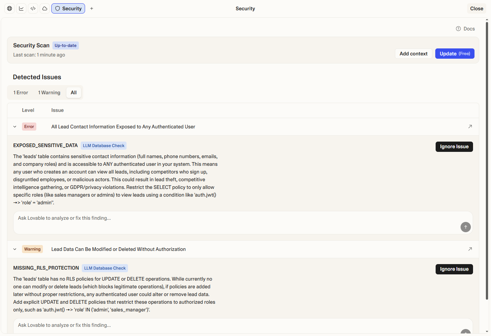

🛡️ למה אבטחה חשובה?
גם דף נחיתה פשוט עם טופס לידים יכול להיות פגיע:
- דליפת נתונים - מידע של לקוחות עלול להגיע לעיניים לא רצויות
- מחיקת מידע - האקרים יכולים למחוק את כל הלידים שלכם
- גישה לא מורשית - אנשים לא מורשים יכולים לצפות במידע פרטי
- מפתחות API חשופים - מפתחות סודיים שנמצאים בקוד הגלוי
Lovable מזהה את הבעיות האלה אוטומטית ועוזר לכם לתקן אותן!
משימה 1: גישה ל-Security View 🔍
פתחו את תצוגת האבטחה כדי לראות את מצב האבטחה של הפרויקט.
איך עושים את זה:
- לחצו על כפתור ה-+ שליד Preview
- בחרו Security
- המתינו שהסריקה תסתיים
שלב 2: היכרות עם רמות החומרה 🚦
למדו להבין את סוגי ההתראות שמופיעות:
🔴 Error - שגיאה קריטית
בעיות אבטחה חמורות שחייבים לטפל בהן מיד לפני הפרסום. למשל:
- טבלאות ללא הגנת RLS
- מפתחות API חשופים בקוד
- גישה פתוחה למידע רגיש
🟡 Warning - אזהרה
בעיות אבטחה חשובות שכדאי לטפל בהן. למשל:
- הרשאות רחבות מדי
- חוסר בבדיקת סיסמאות שדלפו
- מדיניות RLS לא מספקת
🔵 Info - מידע
המלצות כלליות ושיטות עבודה מומלצות לשיפור האבטחה.
💡 איך זה נראה:
דוגמה למסך ה-Security View עם ממצאים - שגיאות ואזהרות שזוהו באפליקציה
משימה 3: תיקון בעיות עם "Try to Fix" 🔧
רוב הבעיות ניתנות לתיקון אוטומטי בלחיצה אחת!
איך עושים את זה:
- עברו על רשימת הממצאים ב-Security View
- לכל ממצא עם כפתור Try to fix - לחצו עליו
- Lovable ינסה לתקן את הבעיה אוטומטית
- בדקו שהתיקון הצליח (הממצא אמור להיעלם)
משימה 4: סריקת אבטחה מעמיקה 🔬
בקשו סקירת אבטחה מקיפה של כל הקוד באמצעות AI.
איך עושים את זה:
אפשרות א' - דרך ה-Security View:
- לחצו על כפתור Security Review
- המתינו לסיום הסריקה המעמיקה
אפשרות ב' - דרך הצ'אט:
פרומפט לדוגמא:
בדוק את אבטחת דף הנחיתה שלי ותן לי דוח מפורט על בעיות אבטחה אפשריות
הסריקה המעמיקה בודקת:
- כל הקוד באפליקציה
- מניעת XSS (הזרקת סקריפטים)
- סניטציה של קלט משתמש
- פגיעויות באימות
- מדיניות RLS ואבטחת מסד הנתונים
שלב 5: היכרות עם RLS (Row Level Security) 🗃️
RLS קובע מי יכול לגשת לאיזה מידע במסד הנתונים.
מה זה RLS?
Row Level Security (אבטחה ברמת השורה) הוא מנגנון שמגדיר כללים - מי יכול לקרוא, לכתוב, לעדכן או למחוק מידע בטבלאות שלכם.
דוגמאות למדיניות RLS:
- מידע אישי - משתמש רואה רק את המידע שלו עצמו
- תוכן ציבורי - כולם יכולים לקרוא, רק הבעלים יכול לערוך
- גישה לצוות - חברי צוות רואים מידע משותף
פרומפט לבדיקת RLS:
בדוק את מדיניות ה-RLS בטבלת הלידים שלי וודא שרק המשתמש המחובר יכול לראות את הלידים שלו
משימה 6: אבטחת מפתחות API 🔑
מפתחות API לעולם לא צריכים להיות בקוד הגלוי!
מה לא לעשות:
אם תדביקו מפתח API בצ'אט, Lovable יזהה אותו ויזהיר אתכם.
מה כן לעשות:
במקום להדביק מפתחות, תארו מה אתם רוצים להשיג:
❌ לא לעשות:
הוסף את מפתח ה-API הזה: sk-1234567890abcdef
✅ כן לעשות:
אני רוצה לחבר את השירות X לאפליקציה שלי כדי לשלוח מיילים
Lovable ידריך אתכם:
- לאחסן את המפתח באופן מאובטח ב-Secrets storage
- ליצור Edge Function שמשתמש במפתח בצד השרת
- לקרוא ל-Edge Function מהקוד שלכם בצורה בטוחה
💡 טיפים חשובים
📌 בדקו לפני פרסום: תמיד הריצו סריקת אבטחה לפני שמפרסמים את האתר
📌 בדקו אחרי שינויים: כל שינוי משמעותי באפליקציה - הריצו סריקה מחדש
📌 אין אזהרות ≠ מאובטח: גם אם אין אזהרות, מומלץ לבדוק באופן יסודי
📌 מידע רגיש: אם דף הנחיתה/האתר מטפל במידע רגיש, שקלו להיעזר במומחה אבטחה
🔧 משהו לא עובד?
לא רואים את Security View:
- ודאו שה-Cloud מופעל בפרויקט
- נסו לרענן את הדף
התיקון האוטומטי לא עזר:
- נסו לתאר את הבעיה בצ'אט ובקשו עזרה
- בדקו את התיעוד של Lovable
✅ רשימת בדיקה לפני סיום
- פתחתי את Security View ובדקתי את הממצאים
- תיקנתי את כל ה-Errors (שגיאות קריטיות)
- עברתי על ה-Warnings והחלטתי מה לתקן
- הרצתי סריקת אבטחה מעמיקה
- וידאתי שאין מפתחות API חשופים בקוד
- בדקתי שמדיניות ה-RLS מתאימה לצרכים שלי